ATAGO
刺し身の一皿が付く、お食事処でございます。
お食事は十二品。そのうち八品に、刺し身の一皿をお付けしております。
古河市上大野、お食事処あたごでございます。
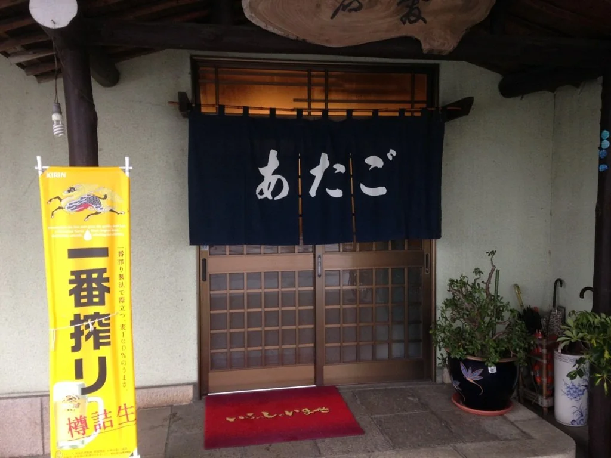
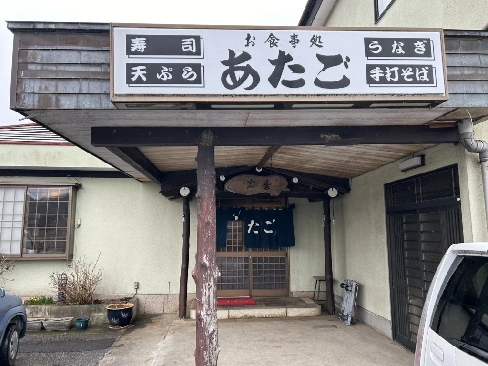
寿司、天ぷら、うなぎ、そして手打そば。軒の看板に、この四つを掲げております。
主菜は、焼き魚から揚げもの、焼肉まで。季節によって、つけあわせに変更がございます。お子様ランチもご用意しております。
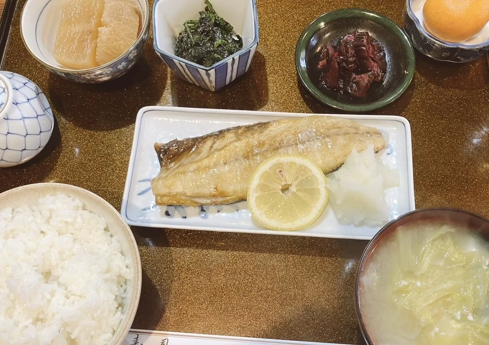
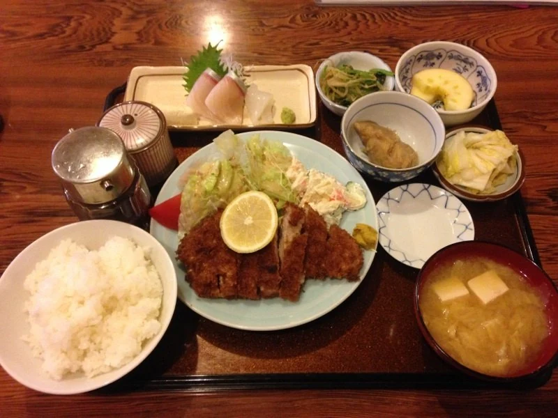
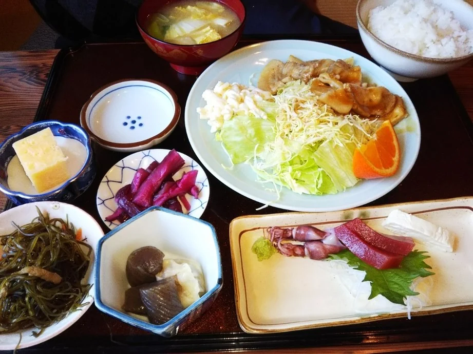
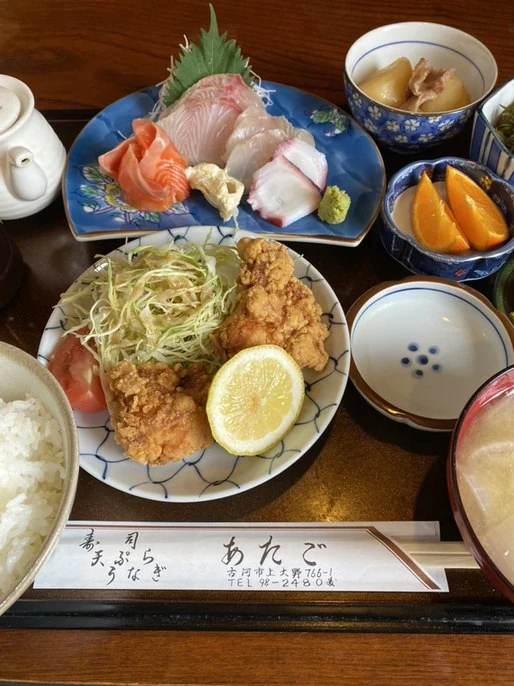
そばは手打ちでご用意しております。天ぷらと合わせた定食もございます。
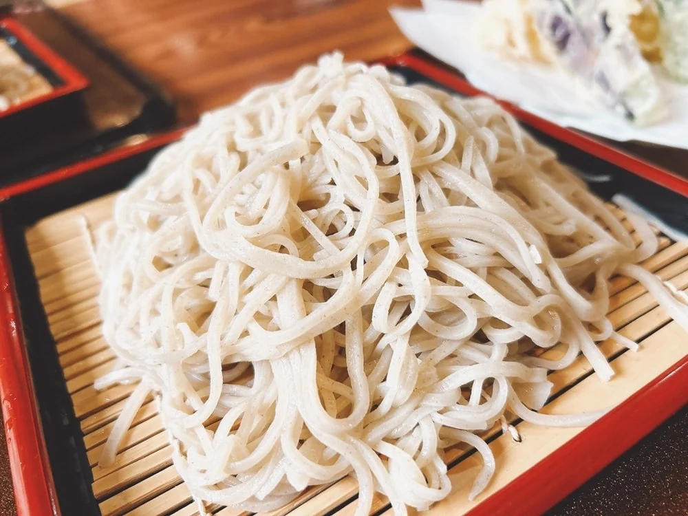
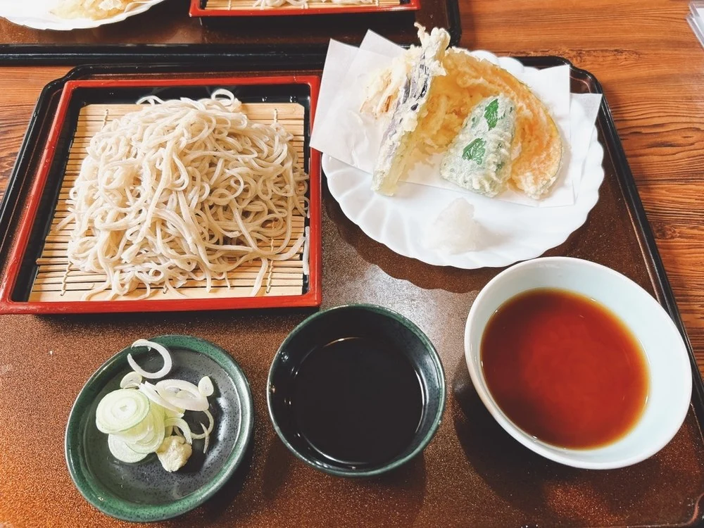
ご注文をいただいてから、ひとつずつお作りいたします。お時間をいただくことがございますが、どうぞごゆっくりお待ちください。お急ぎの折は、お電話でご相談くださいませ。
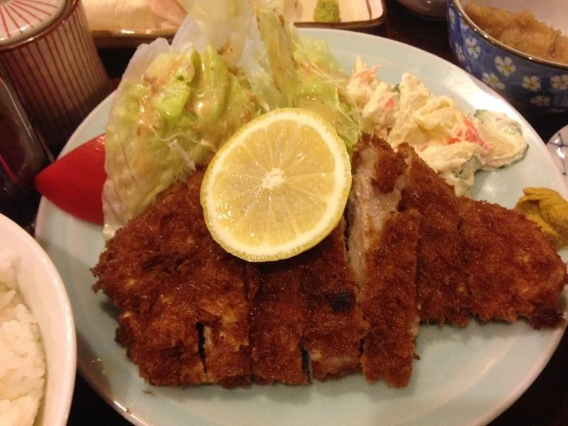
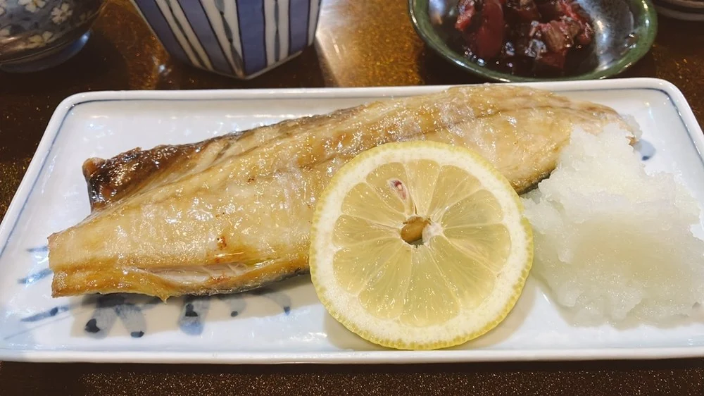
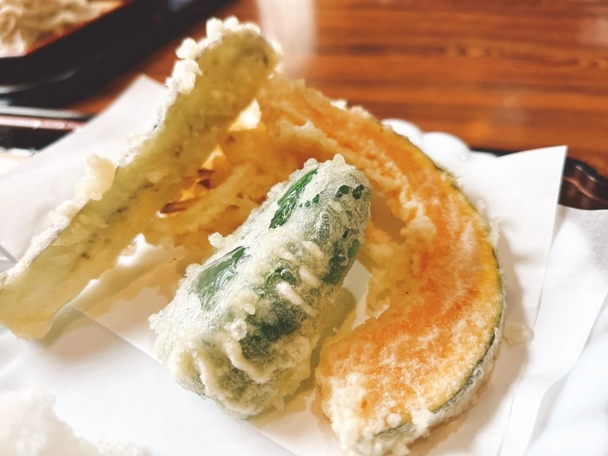
カウンターと、お座敷がございます。個室もご用意しておりますので、お電話でお申し付けください。
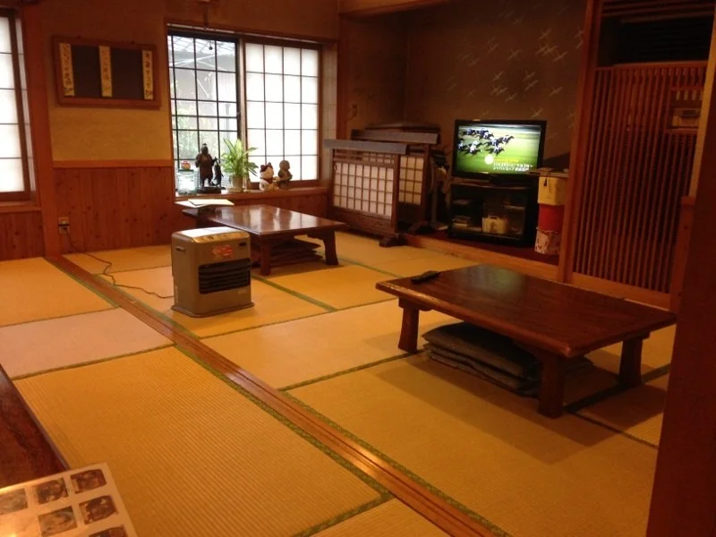
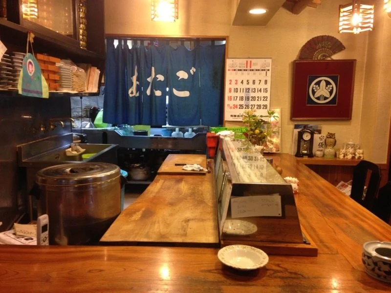
承っております。人数とお日にちを、お電話でご相談ください。
「油の乗ったサバがいい色に焼きあがっており、副菜も3品とみかん、味噌汁は具沢山とコスパ最高の定食ですね。とても美味しくいただきました。」
hako1917 様（2026年2月）
「蕎麦は中々本格的で、鼻に抜ける香りが良い。天ぷらもカリッと上がっていて、トータルで楽しめた。」
HIRO41 様（2024年3月）
「とんかつは、柔らかく美味しいです。お刺身も好きなネタで美味しい。」
初音ミナ 様（2014年11月）
三社大明神、総和小堤郵便局の近くでございます。駐車場がございます。
| 住所 | 〒306-0201 茨城県古河市上大野766-1 |
|---|---|
| 電話 | 0280-98-2480 |
| 営業時間 | 11:30〜20:00 |
| 定休日 | 木曜日 |
暖簾を出して、お待ちしております。
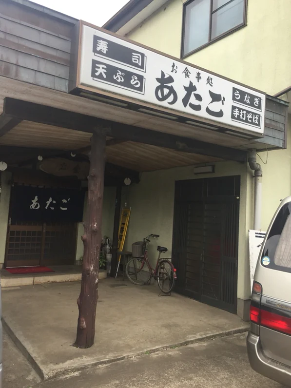